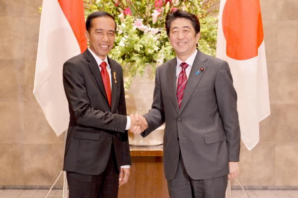
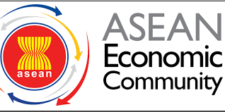
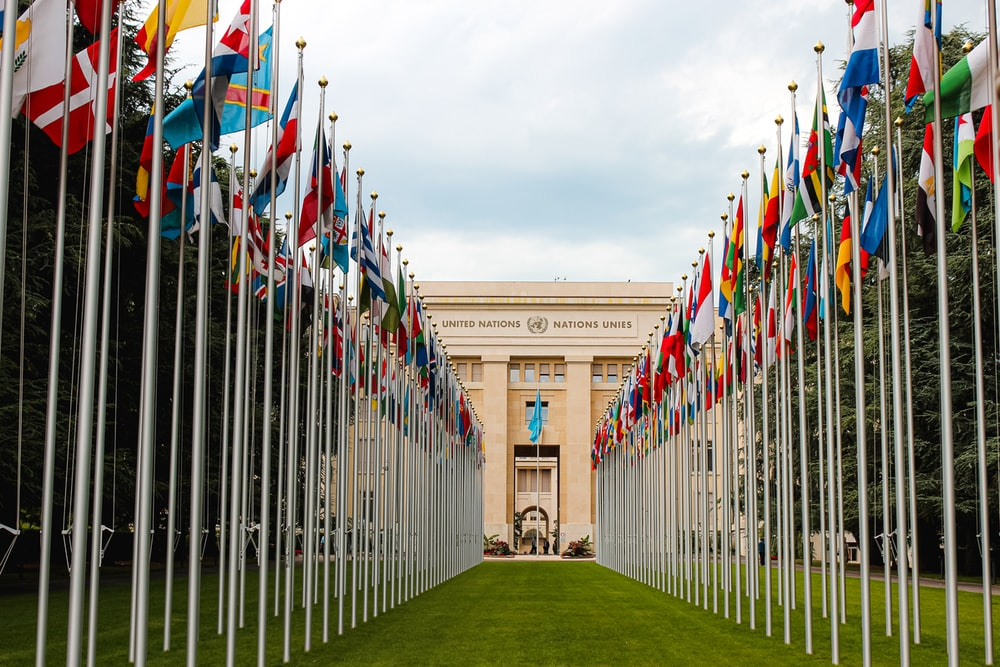

  
Peran Indonesia dalam SDGS nomor 8
“Pekerjaan Layak dan Pertumbuhan Ekonomi Berkelanjutan.”
Sebagai manusia yang membutuhkan uang untuk hidup, saat memiliki pekerjaan kita selalu berasumsi, semuanya akan baik-baik saja. Meskipun bahwasannya, memiliki pekerjaan tidak sepenuhnya menjamin kemampuan kita untuk keluar dari cengkeraman kemiskinan. Namun, sekarang telah menjadi masalah dunia dimana beberapa negara yang mengalami kelebihan penduduk, penduduknya juga mengalami pengangguran yang berdampak pada merosotnya kesejahteraan suatu negara dan peristiwa ini dapat disebabkan beberapa faktor, termasuk kekurangan peluang kerja terus menerus, investasi yang tidak memadai dan rendahnya konsumsi mengarah pada turunnya kemampuan pemerintah untuk menyediakan layanan publik dan program sosial.
“Kerjasama Bilateral Indonesia-Jepang”
Untuk mengimbangi pertumbuhan penduduk usia kerja di seluruh dunia yang mencapai sekitar 40 juta per tahunnya, diperkirakan lebih dari 600 juta pekerjaan perlu diciptakan hingga 2030. Kondisi dimana sekitar 780 juta pekerja perempuan maupun laki-laki yang tidak dapat memenuhi kebutuhan hidupnya dengan gaji yang tidak pantas, tentunya mengganggu kualitas hidup masyarakat pada suatu negara, maka kondisi ini harus diatasi. Dalam forum internasional, Indonesia telah berkomitmen sangat kuat untuk memasukkan tujuan ini ke dalam salah satu SDGS sehingga hal ini menjadi fokus global dan dapat diatasi bersama. Dalam memfokuskan dan berkontribusi pada tujuan SDGS nomor 8 yakni “Pekerjaan yang Layak dan Pertumbuhan Ekonomi Berkelanjutan,” melalui kerjasama Indonesia dengan Jepang, yaitu Japan International Cooperation Agency (JICA). Kerjasama ini termasuk ke dalam jenis kerjasama bilateral yakni hubungan antara dua negara yang bertujuan untuk saling menguntungkan. JICA bekerjasama dengan pemerintah Indonesia untuk meningkatkan kesejahteraan masyarakat melalui pelatihan pekerjaan yang relevan dengan berbagai keterampilan vokasi yang harus dimiliki setiap pekerja yang bekerja dalam bermacam-macam bidang. Sebaliknya, dari kerjasama ini Jepang dapat memperkuat hubungan diplomatik dan memperkokoh kerjasama dengan Indonesia, yang merupakan negara mitra terbesar Jepang dalam hal pembangunan.
Pada 6 November 2024, dilaksanakan acara, yaitu “Simposium SDGs Hub UUI: Bertindak Bersama untuk Masa Depan yang Berkelanjutan” yang mempertemukan Universitas Indonesia dengan SDSN Indonesia untuk memperkuat inisiatif pembangunan. Pada acara ini, Michael Permana Rinaldi dari Japan International Cooperation Agency (JICA) berbagi pelajaran terkait implementasi SDGS. Michael memulai dengan menjelaskan ketika SDGs diperkenalkan pada tahun 2016, Jepang baru melihatnya sebagai bantuan pangan, SDA, serta bagi yang mengalami bencana. Akan tetapi, tahun 2020, Jepang menyadari pentingnya mengintegrasikan SDGs dalam proses bisnis, Jepang melihat peluang kemajuan Indonesia melalui UMKM, yang dipandang sebagai kunci. Dukungan pemerintah daerah Jepang untuk kedua, UMKM dan SDGs tumbuh seiring munculnya peluang bisnis berkelanjutan yang menarik investor dan menginspirasi kaum muda. Minat pemuda terhadap SDGs juga semakin meningkat yang dapat kita lihat, melalui bisnis hijau dan biru. Bisnis hijau yang dimaksud terkait bisnis yang bekerja secara ramah lingkungan. Sedangkan bisnis biru berarti, fokus pada keberlanjutan ekosistem laut dan perairan. Selain itu pemerintah Jepang juga bekerja sama dengan lembaga keuangan Indonesia untuk memberi pinjaman berbunga rendah ataupun tanpa rendah bagi perusahaan yang berinisiatif dalam SDGs. Dengan dilakukannya hal ini, Jepang melihat semangat rakyat Indonesia, serta mengajak generasi muda untuk ikut terlibat dalam mencapai dan berkontribusi pada SDGs. Dengan demikian, bantuan dari Jepang membuka mata pemerintah Indonesia bahwa juga diperlukan upaya dari rakyat, dalam kasus ini, yaitu perusahaan swasta atau start-up.
“Kerjasama Regional ASEAN Economic Community”
Indonesia juga aktif mengikuti kerjasama regional untuk mencapai tujuan SDGs nomor 8 tersebut. Salah satunya dengan negara-negara di kawasan Asia Tenggara, melalui ASEAN Economic Community (AEC), inisiatif ini bertujuan untuk menciptakan pasar tunggal untuk negara anggota ASEAN dengan integrasi ekonomi di antara negara-negara tersebut dan menghapus hambatan ekonomi antar negara, menjadi kawasan yang memiliki daya saing ekonomi, pemberdayaan UMKM. Namun, dalam upaya pencapaiannya terhadap tujuan utama, negara-negara ASEAN termasuk Indonesia tetap berpegang teguh untuk saling menghormati kedaulatan dan kebijakan ekonomi masing-masing. Indonesia berperan aktif mendorong integrasi ekonomi di kawasan ASEAN, khususnya dalam sektor pembangunan infrastruktur sebagai penghubung antar negara. Tak hanya itu, Indonesia sebagai pendorong utama dalam pelaksanaan kebijakan AEC, termasuk inisiatif untuk menerapkan pasar tunggal sebagai tujuan utama AEC. Indonesia juga mendukung pertumbuhan ekonomi yang berkelanjutan bagi negara-negara ASEAN dengan meningkatkan daya saing ekonomi, seperti memperluas transaksi mata uang lokal dan Quick Response Code Indonesia Standard (QRIS) untuk menyebarkan digitalisasi dan memberi kemudahan khususnya rakyat Indonesia dalam melakukan transaksi. Indonesia juga membantu melaksanakan berbagai program sosial dan kampanye pendidikan dalam upaya mengatasi kemiskinan untuk meningkatkan daya juang dan daya saing ekonomi masyarakat.
“Kerjasama Multilateral dalam National Urban Employment Program"
Selain bilateral dan regional, negara Indonesia juga bekerjasama secara multilateral dalam forum internasional. Pemerintah Indonesia bekerjasama dengan World Bank dalam National Urban Employment Program (NUEP). NUDP telah dilaksanakan sejak tahun 2020 dan diperkirakan selesai pada Desember 2024. Program tersebut memiliki beberapa pelatihan dan pengembangan keterampilan yang dilakukan, seperti program magang dan pelatihan di tempat kerja yang memberi rakyat pengalaman praktis dan membuka pandangan mengenai dunia kerja yang akan dihadapi, contohnya kerjasama Universitas dengan perusahaan besar, khususnya perusahaan pemerintahan untuk menyediakan program magang bagi mahasiswa dari kerjasama Universitas dan Pemerintahan. Juga pelatihan vokasional untuk meningkatkan keterampilan tenaga kerja, seperti pelatihan berbagai kejuruan di Jakarta meliputi teknologi, kesehatan, dan lainnya. Selain itu, juga memberdayakan UMKM untuk menciptakan lapangan pekerjaan baru sebagai upaya mengatasi tingkat pengangguran di Indonesia, terutama di kota-kota besar, seperti Jakarta.